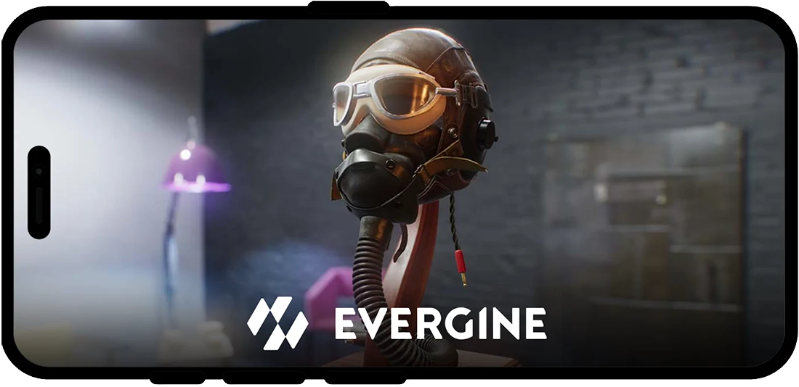
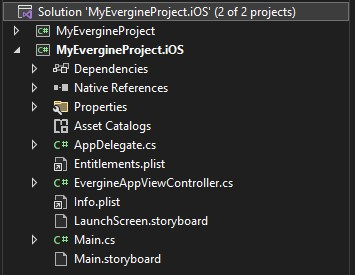
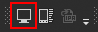
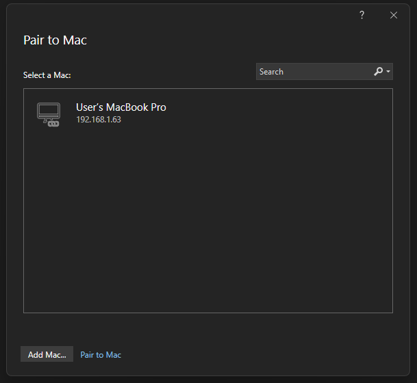
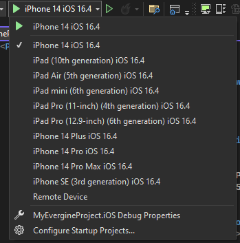
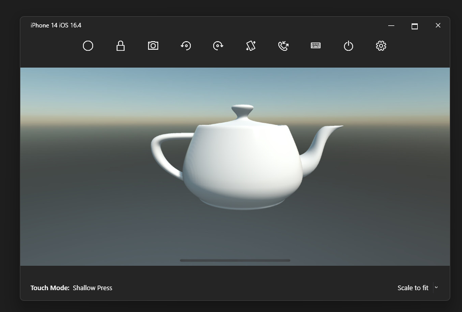

iOS

Evergine runs on iPhone and iPad through .NET for iOS (net10.0-ios) and renders with Metal. The iOS .NET 10 template creates a native iOS launcher that hosts an Evergine view in a storyboard, so you can combine it with your own UIKit interface. If you also need Android and Windows from one project with a shared UI, use the MAUI template instead (see Alternative: .NET MAUI).
Create the iOS profile
Select iOS .NET 10 when you create the project in Evergine Launcher, or add it later from Settings > Project Settings in Evergine Studio (see Manage profiles). The template adds a launcher project named <Project>.iOS.
| Setting | Value in the template |
|---|---|
| Target framework | net10.0-ios |
| Minimum iOS version | 15.4 (SupportedOSPlatformVersion in the project, MinimumOSVersion in Info.plist) |
| Devices | iPhone and iPad (UIDeviceFamily 1 and 2) |
| Graphics | Metal (MTLGraphicsContext, package Evergine.Metal) |
| Window system | IOSWindowsSystem (package Evergine.iOS) |
| Audio | None registered by the template |
| Compile effects | Yes |
Prerequisites
Visual Studio 2026 on Windows. The launcher project is set up to be built from Visual Studio for Windows. Opening the solution on a Mac is not supported.
The iOS workload for .NET 10:
dotnet workload install iosA Mac build host. Apple's tools only run on macOS, so Visual Studio compiles and signs the app on a paired Mac with Xcode installed. Microsoft's Pair to Mac guide lists the Xcode and remote login requirements.
Project structure

| File | Purpose |
|---|---|
Main.cs |
Entry point. Calls UIApplication.Main with AppDelegate. |
AppDelegate.cs |
Standard iOS application delegate. Handle app lifecycle events (background, foreground) here. |
Main.storyboard |
Main storyboard. Its root view controller is EvergineAppViewController. |
EvergineAppViewController.cs |
Creates the Evergine application, the Metal context and the display, and runs the loop. |
LaunchScreen.storyboard |
Launch screen shown while the app loads. |
Info.plist |
Bundle identifier, minimum OS version, supported orientations and storyboards. |
Entitlements.plist |
App capabilities. Empty by default. |
EvergineAppViewController derives from EvergineViewController (in Evergine.iOS), which provides the Metal-backed view. Its ViewDidLoad follows the same steps as every other launcher:
using Evergine.Common.Graphics;
using Evergine.Framework.Graphics;
using Evergine.Framework.Services;
using Evergine.iOS;
using System.Diagnostics;
namespace MyProject.iOS
{
public partial class EvergineAppViewController : EvergineViewController
{
private IOSWindowsSystem windowsSystem;
public EvergineAppViewController(ObjCRuntime.NativeHandle handle)
: base(handle)
{
}
public override void ViewDidLoad()
{
base.ViewDidLoad();
MyApplication application = new MyApplication();
// The window system is registered as the base WindowsSystem type so that
// platform-agnostic code can resolve it.
this.windowsSystem = new IOSWindowsSystem(this);
application.Container.RegisterInstance(this.windowsSystem as WindowsSystem);
var surface = this.windowsSystem.CreateSurface(0, 0);
ConfigureGraphicsContext(application, surface);
Stopwatch clockTimer = Stopwatch.StartNew();
this.windowsSystem.Run(
() => application.Initialize(),
() =>
{
var gameTime = clockTimer.Elapsed;
clockTimer.Restart();
application.UpdateFrame(gameTime);
application.DrawFrame(gameTime);
});
this.LoadAction?.Invoke();
}
private static void ConfigureGraphicsContext(MyApplication application, Surface surface)
{
GraphicsContext graphicsContext = new global::Evergine.Metal.MTLGraphicsContext();
graphicsContext.CreateDevice();
SwapChainDescription swapChainDescription = new SwapChainDescription()
{
SurfaceInfo = surface.SurfaceInfo,
Width = surface.Width,
Height = surface.Height,
ColorTargetFormat = PixelFormat.R8G8B8A8_UNorm_SRgb,
ColorTargetFlags = TextureFlags.RenderTarget | TextureFlags.ShaderResource,
DepthStencilTargetFormat = PixelFormat.D32_Float,
DepthStencilTargetFlags = TextureFlags.DepthStencil,
SampleCount = TextureSampleCount.None,
IsWindowed = true,
RefreshRate = 60
};
var swapChain = graphicsContext.CreateSwapChain(swapChainDescription);
swapChain.VerticalSync = true;
swapChain.FrameBuffer.IntermediateBufferAssociated = false;
var graphicsPresenter = application.Container.Resolve<GraphicsPresenter>();
graphicsPresenter.AddDisplay("DefaultDisplay", new Display(surface, swapChain));
application.Container.RegisterInstance(graphicsContext);
}
}
}
Notice that the Metal swap chain uses a D32_Float depth buffer, where the desktop and Android launchers use D32_Float_S8X24_UInt.
Note
The template does not register an audio device, so audio components are silent on iOS unless you register one yourself. See Audio.
Note
The iOS .NET 10 profile exports textures as BC3_UNorm, while the iOS profile of the MAUI template uses ETC1_RGB8 and R4G4B4A4. BC formats are only available on Apple GPUs that support BC texture compression. If textures fail to load or look wrong on your target devices, change the compression formats of the profile in Project Settings > Profiles.
Connect Visual Studio to a Mac
Open the iOS solution in Visual Studio and press the Pair to Mac button on the iOS toolbar:

The Pair to Mac dialog lists the Mac build hosts it finds on your network. Select one and press Connect. Visual Studio asks for the Mac user credentials the first time.

Deploy to the iOS Simulator
With a Mac paired, the run target list shows the simulators available on the Mac:

Pick one and press F5. Visual Studio builds on the Mac, starts the simulator and mirrors it in a window on your Windows desktop, where you can debug the app as usual.

Deploy to a device
Running on a physical iPhone or iPad needs an Apple developer account and a provisioning profile that matches the bundle identifier. Change ApplicationId in the project file (it defaults to com.companyname.<Project>.iOS) to an identifier you own, then set up provisioning following Device provisioning for iOS. The automatic provisioning option is the quickest way to start.
Once provisioning is set up, connect the device, select it in the run target list and run. To distribute the app, see Publish an iOS app.
Alternative: .NET MAUI
The MAUI template creates one multi-targeted .NET MAUI project that builds for net10.0-android, net10.0-ios and, on Windows, net10.0-windows10.0.19041.0. It adds an EvergineView control you place in XAML pages, with one handler per platform:
| MAUI profile | Handler | Window system | Graphics |
|---|---|---|---|
Windows |
EvergineViewHandler.Windows.cs |
WinUIWindowsSystem |
DirectX 11 |
Android |
EvergineViewHandler.Android.cs |
AndroidWindowsSystem |
Vulkan |
iOS |
EvergineViewHandler.iOS.cs |
IOSWindowsSystem |
Metal |
Choose MAUI when your application is mostly native UI with a 3D view inside it, and you want to write that UI once. Choose the iOS .NET 10 template when you need full control of the iOS app or only target Apple devices. The MAUI template sets its minimum iOS version to 12.2. See the .NET MAUI documentation and the .NET for iOS documentation for platform setup.